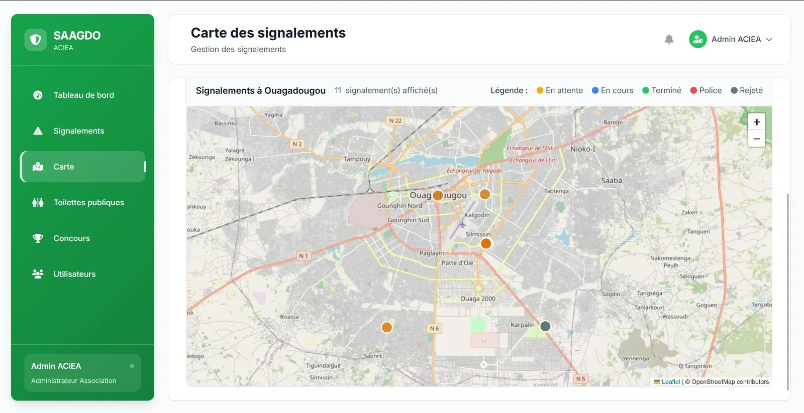
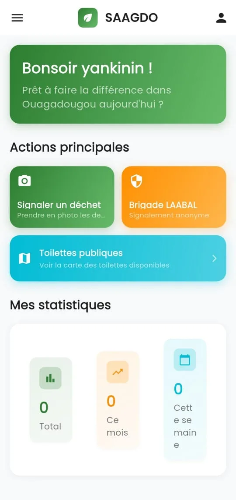

SAAGDO : putting environmental data to work for action.
SAAGDO combines a mobile application and a management platform to strengthen environmental monitoring, citizen mapping and the anticipation of water- and sanitation-related pollution risks.


Features
What SAAGDO does
An app for citizens, a platform for those who act on the ground.
Report waste
Citizens photograph a waste dump and report it in seconds from the app.
LAABAL brigade
An anonymous report, sent straight to the LAABAL brigade.
Routing and follow-up
Each report is sent to the town hall or the LAABAL brigade, then followed until clean-up: pending, in progress, done.
Public toilets
A map of the public toilets available in Ouagadougou.
Dashboard
For managers: report map, statistics and user management.
Citizen challenge
A ranking of the most active users and a challenge based on real actions.
Partnership
A cooperation framework with GWP West Africa
On 3 July 2026, ACIEA and the Global Water Partnership West Africa (GWP-WA) signed, at the GWP-WA Secretariat in Ouagadougou, a Memorandum of Understanding on sustainable water resource management, climate resilience and digital innovation. The deployment of SAAGDO is at the heart of this partnership.

Collaborate around SAAGDO
Local authorities, technical services, researchers, technical and financial partners: let’s explore collaboration opportunities together.